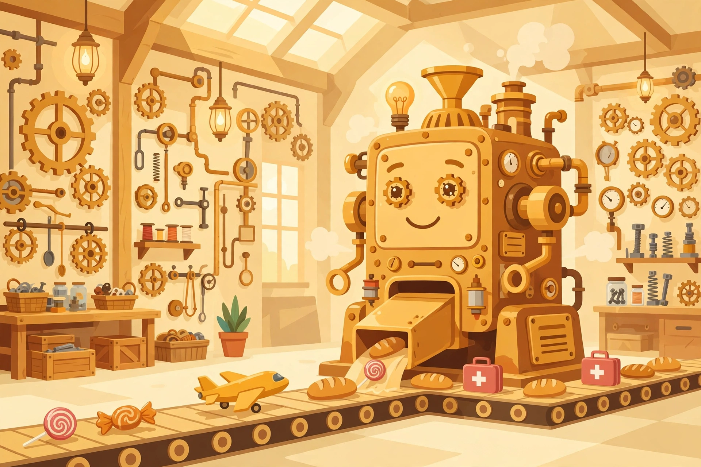

Welcome to the Generator Hall — one friendly machine, four families of things, and a conveyor belt that never stops.
Meet Ginny the Gear, the mascot of this world.
The Signature Boundless Generator Archive holds 137,025 generator records — jets, medical kits, foods, and candies, each one a fully described generated thing — made by the boundless generators themselves.
Two working tools, right here on the page. Each one says what it does and what it cannot do. Neither tool reaches the live web, and neither one needs a key.
Jet ranges in the archive are in nautical miles. Enter a range to get kilometres (1 nautical mile = 1.852 km).
Nautical miles:
Enter a family to count how many of the 500-title sample records sit in it.
Family:
Designs, printables, and demos — free, downloadable, usable on the page. Every product is labeled Signature or Fun. Nothing here is for sale.
A paper ornament: a brass gear with a small jet, a candy, and a loaf of bread, to stand on a desk.
Making: print the printable file on card, cut out the gear and the three small shapes, fold along the marked lines, and glue the tabs.
A set of cards for playing at generators: each card names a family and a record, and asks for a new one in the same family.
Making: print the printable file on card, cut out the cards, and draw one card at a time. Every family and record on the cards comes from the archive.
A poster of the Generator Hall machine with its conveyor belt of jets, candies, bread, and medical kits.
Making: print the printable file and pin it up. The machine is a drawing, not a working generator.
Download all product lines as a printable (text)
Ginny once asked the machine for a jet that tastes like candy. The machine thought about it, hummed twice, and handed back a candy that flies. (Fun — a made-up tale, not a record.)